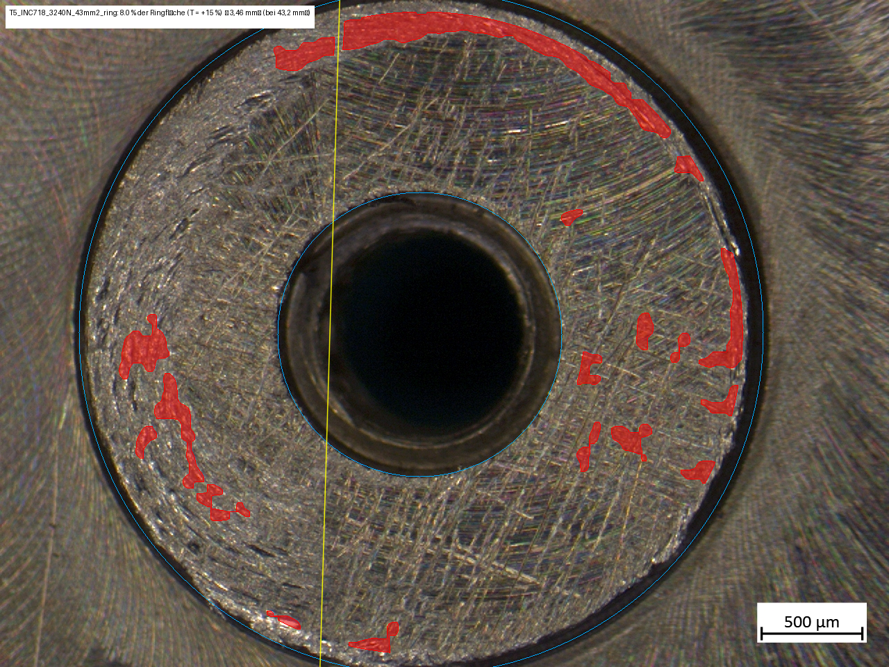
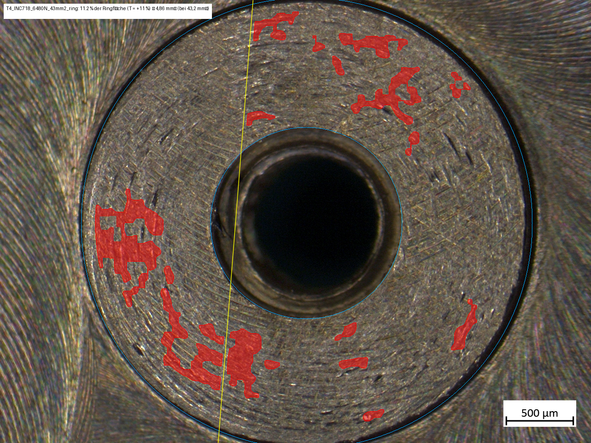
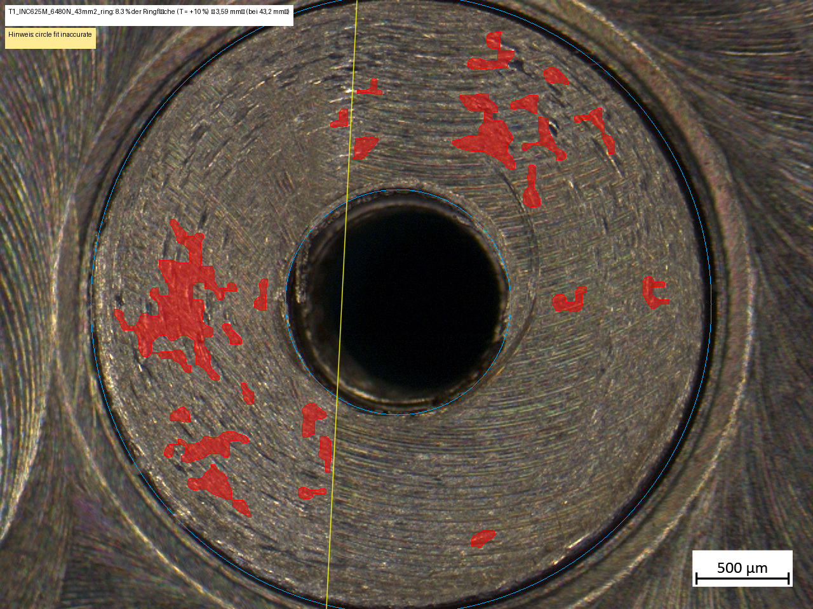
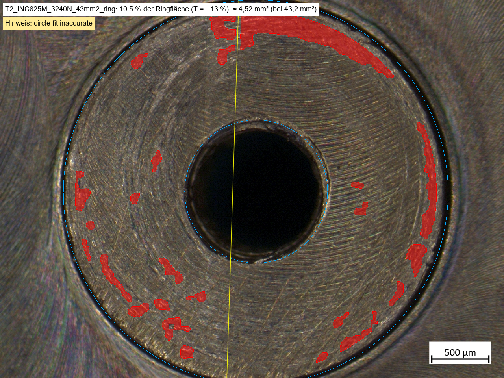

| Rank | Test | Material | Force (N) | Wear (%) | Wear area (mm²) | Geometric p (MPa) | Resulting p (MPa) | Flags |
|---|---|---|---|---|---|---|---|---|
| 1 | T4 | INC718 | 6480.0 | 11.2 | 0.625 | 150.7 | 1340.7 | – |
| 2 | T2 | INC625M | 3240.0 | 10.5 | 0.625 | 75.3 | 719.9 | circle fit inaccurate |
| 3 | T1 | INC625M | 6480.0 | 8.3 | 0.501 | 150.7 | 1812.2 | circle fit inaccurate |
| 4 | T5 | INC718 | 3240.0 | 8.0 | 0.457 | 75.3 | 941.3 | – |
Wear area = wear fraction × nominal ring area (43.2 mm²). Multiple experiments per group are averaged.
Resulting contact pressure = normal force / (wear fraction × nominal ring area).

| Wear fraction | 8.0 % |
| Wear area (analyzed) | 0.457 mm² |
| Ring area nominal | 43.2 mm² |
| Ring area analyzed | 5.71 mm² |
| Bore Ø measured | 3.329 mm |
| Geometric pressure | 75.3 MPa |
| Resulting pressure | 941.3 MPa |
| µm/px | 3.378 |
| Threshold | 1.154 |
| Seam | detected |
| Flags | – |

| Wear fraction | 11.2 % |
| Wear area (analyzed) | 0.625 mm² |
| Ring area nominal | 43.2 mm² |
| Ring area analyzed | 5.56 mm² |
| Bore Ø measured | 3.307 mm |
| Geometric pressure | 150.7 MPa |
| Resulting pressure | 1340.7 MPa |
| µm/px | 3.378 |
| Threshold | 1.11 |
| Seam | detected |
| Flags | – |

| Wear fraction | 8.3 % |
| Wear area (analyzed) | 0.501 mm² |
| Ring area nominal | 43.2 mm² |
| Ring area analyzed | 6.02 mm² |
| Bore Ø measured | 3.303 mm |
| Geometric pressure | 150.7 MPa |
| Resulting pressure | 1812.2 MPa |
| µm/px | 3.378 |
| Threshold | 1.096 |
| Seam | detected |
| Flags | circle fit inaccurate |

| Wear fraction | 10.5 % |
| Wear area (analyzed) | 0.625 mm² |
| Ring area nominal | 43.2 mm² |
| Ring area analyzed | 5.97 mm² |
| Bore Ø measured | 3.307 mm |
| Geometric pressure | 75.3 MPa |
| Resulting pressure | 719.9 MPa |
| µm/px | 3.378 |
| Threshold | 1.126 |
| Seam | detected |
| Flags | circle fit inaccurate |